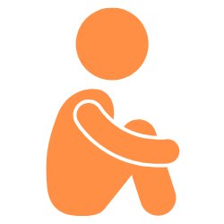
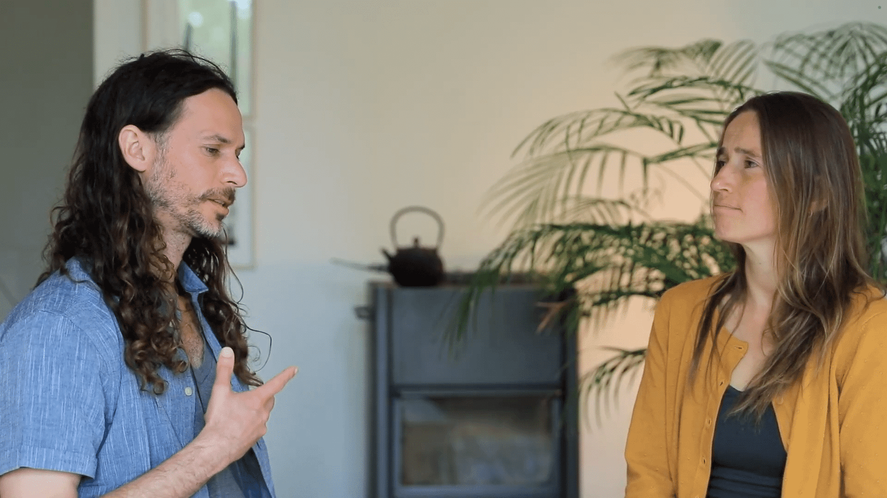
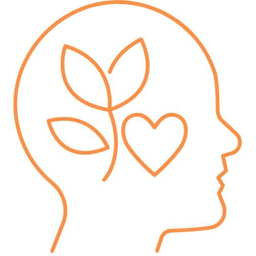
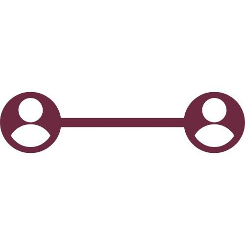

The Art of Communication
The Art of Communication
Transform Your Inner Game and Relational Field With 1-1 Coaching
Register Your InterestYou've Invested in Your Growth, But When a High-Stakes, Real-World Situation Hits — With a Team Member, Client, or Your Spouse — Your "Standard Operating System" Fails
You know what you should do, but you default to:


Most of us went through years of schooling without learning how to navigate conflict, give effective feedback, or build psychological safety. As a leader, your relational capacity has outsized impact — yet these skills were never taught.
You sense there's a way through that doesn't require fighting, avoiding, or getting scraped up along the way.

After the Wharton School of Business, I spent 15 years exploring what was missing in that education: wisdom traditions, psychotherapy training, mindfulness (15+ months on retreat), and extensive experimentation with thousands of people worldwide.
I've trained in: Nonviolent Communication (NVC), Hakomi, Organic Intelligence, AEDP, Core Transformation and Wholeness Work. Since 2019, I've been core faculty of the Evolve Foundation, working with CEOs to bring more heart and efficacy to their leadership.
My approach: Transformative growth happens through compelling new experiences. I use presence-based experiential and relational exploration to help your brain-mind-body update old patterns — resulting in greater capacity, confidence, ease, more fulfilling relationships, and a regulated nervous system.
The great gift is you get to take this capacity with you wherever you go.

What We'll Work On
What Becomes Possible
"My whole life I've looked for that kind of connection space. It's like my religion — actually meeting and being met from the heart, with people who actually care about relating and have time to drop in."

Greater capacity and resilience, more confidence, ease and energy flowing toward what matters, regulated nervous system, body-heart-mind in sync.

Difficult conversations become opportunities for connection, conflict reveals what matters, honest feedback without defensiveness, psychological safety becomes natural, relationships become a source of energy.

You get skilled guidance through territory your conditioning didn't prepare you for — and you take this capacity with you wherever you go.
Voices from Our Community
"There is one modality I recommend to everyone without reservation, and that is NVC. Danny brings not only his deep knowledge but also his compassion and presence."
"Danny is a master at making this material accessible and practical. I was able to create an open heart relationship with a complete stranger in a few simple sentence exchanges. I have never experienced anything like this."
"Precise, attuned empathy is one of the most effective and efficient things that I can offer that makes patient interactions go smoother. It gives me confidence and ease... It's foundational to how I doctor."
Ready to Begin?
Schedule a 20-minute strategy call to explore what you're navigating, clarify what support would serve you, and see if we're a good fit.
Register Your Interest